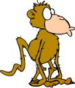

Content
Table of Contents
Overview
This page lists the various tools that the Apache Tomcat project uses. Not all developers use every tool. There are almost certainly some tools that are missing. If you are a committer, you know how to fix this. If you are not a committer, send a short note to the developer mailing list (you'll need to subscribe if you are not already subscribed) and a committer should be able to fix it for you.
Apache Tools
|
|
Apache Tomcat is built using Apache Ant. |
Open Source Tools


Commercial Tools
 |
YourKit, LLC kindly provide free licenses for the YourKit Java Profiler to open source projects. YourKit Java Profiler is primarily used to investigate performance and memory leak issues reported in Apache Tomcat. It was particularly useful when working on the memory leak detection and prevention code. |
 |
Microsoft kindly provide free MSDN licenses to Apache committers that have a requirement for them. MSDN is primarily used to provide build and test environments for the ISAPI redirector and the Windows APR/native connector but it is also used to provide test platforms for Windows specific Tomcat issues such as those related to the Windows Installer. |
 |
Headway software kindly provide free licenses for Structure 101 to open source projects. Structure 101 is primarily being used in Tomcat trunk to analyze the current package dependencies and identify areas where they may be simplified. |
|
 |
Simon Harris kindly provides free licenses for Simian (Similarity Analyzer) to open source projects. Simian is primarily being used in Tomcat trunk to reduce code duplication. |
|
Code Whale Inc. kindly offer a free unlimited localization project to open source projects that use an OSI approved license. Apache Tomcat is using POEditor primarily in Tomcat trunk to manage translations. The Tomcat project has seen a significant increase in localization contributions since starting to use POEditor. |